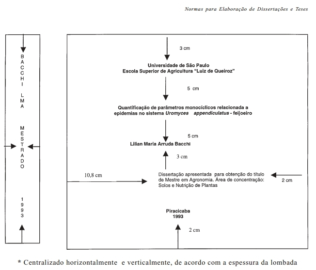
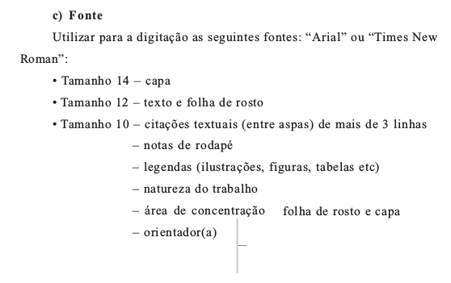
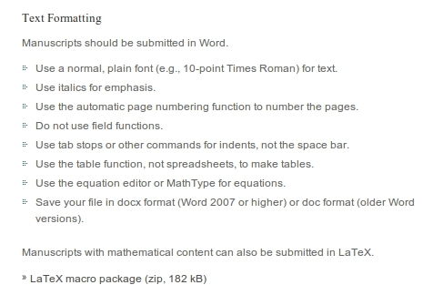
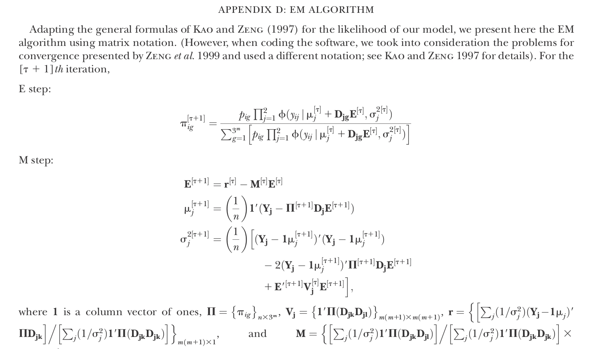

- Objetivo: eficiência e produtividade
- Usar os modernos recursos computacionais
- Flexibilidade de procedimentos
- Importação de formatos
- Foco no conteúdo, não nos formatos e regras
A. Augusto F. Garcia, Luis Eduardo A. Camargo, Lázaro E. P. Peres, Severino M. Alencar
ESALQ/USP



